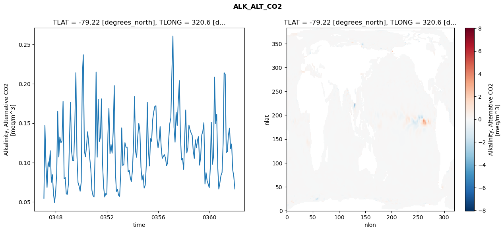
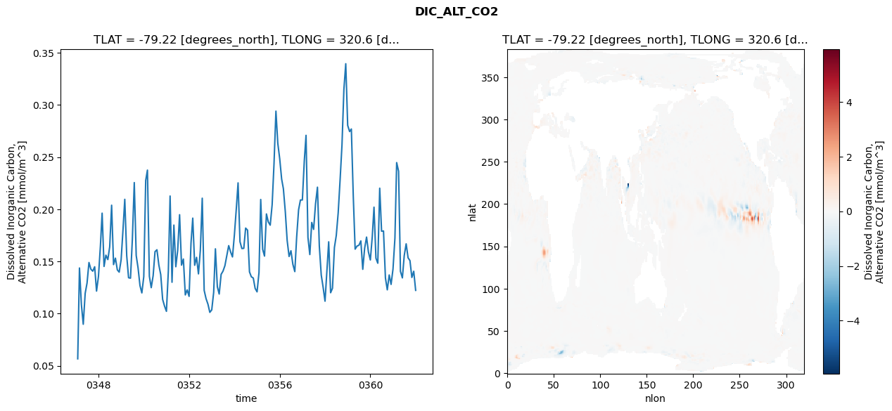
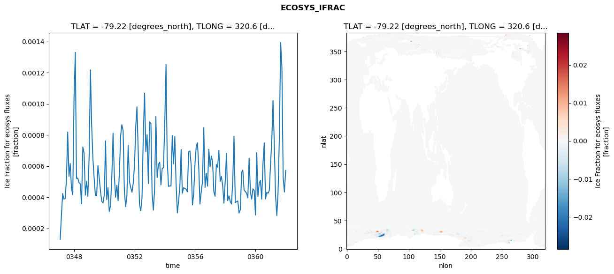
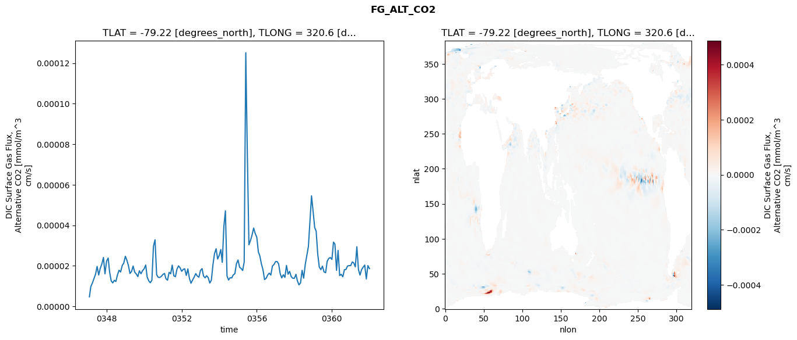

glb-dor_North_Atlantic_basin_017_1999-01-01_00068#
Simulation details#
Case: smyle.cdr-atlas-v0.glb-dor_North_Atlantic_basin_017_1999-01-01_00068.001
Basin: North_Atlantic_basin
Polygon: 17.0
Start date: 1999-01
Show code cell source Hide code cell source
import xarray as xr
import matplotlib.pyplot as plt
Show code cell source Hide code cell source
zarr_store = "/path/to/zarr/store"
# Parameters
zarr_store = "/global/cfs/projectdirs/m4746/Projects/Ocean-CDR-Atlas-v0/data/validation/smyle.cdr-atlas-v0.glb-dor_North_Atlantic_basin_017_1999-01-01_00068.001.validation.zarr"
Show code cell source Hide code cell source
%%time
ds_o = xr.open_zarr(zarr_store).compute()
ds_o
CPU times: user 607 ms, sys: 519 ms, total: 1.13 s
Wall time: 1.35 s
<xarray.Dataset> Size: 2MB
Dimensions: (nlat: 384, nlon: 320, time: 180)
Coordinates:
TLAT float64 8B -79.22
TLONG float64 8B 320.6
ULAT float64 8B -78.95
ULONG float64 8B 321.1
* time (time) object 1kB 0347-02-01 00:00:00 ... 0362-01-01 0...
z_t float32 4B 500.0
Dimensions without coordinates: nlat, nlon
Data variables:
ALK_ALT_CO2_diff (nlat, nlon) float32 492kB nan nan nan ... nan nan nan
ALK_ALT_CO2_rmse (time) float64 1kB 0.05481 0.1473 ... 0.08265 0.06663
DIC_ALT_CO2_diff (nlat, nlon) float32 492kB nan nan nan ... nan nan nan
DIC_ALT_CO2_rmse (time) float64 1kB 0.05666 0.1437 ... 0.1406 0.1223
ECOSYS_IFRAC_diff (nlat, nlon) float32 492kB nan nan nan ... nan nan nan
ECOSYS_IFRAC_rmse (time) float64 1kB 0.0001303 0.0002753 ... 0.0005718
FG_ALT_CO2_diff (nlat, nlon) float32 492kB nan nan nan ... nan nan nan
FG_ALT_CO2_rmse (time) float64 1kB 4.709e-06 9.768e-06 ... 1.863e-05xarray.Dataset
- nlat: 384
- nlon: 320
- time: 180
- TLAT()float64-79.22
- long_name :
- array of t-grid latitudes
- units :
- degrees_north
array(-79.22052261)
- TLONG()float64320.6
- long_name :
- array of t-grid longitudes
- units :
- degrees_east
array(320.56250892)
- ULAT()float64-78.95
- long_name :
- array of u-grid latitudes
- units :
- degrees_north
array(-78.95289509)
- ULONG()float64321.1
- long_name :
- array of u-grid longitudes
- units :
- degrees_east
array(321.12500894)
- time(time)object0347-02-01 00:00:00 ... 0362-01-...
- bounds :
- time_bound
- long_name :
- time
array([cftime.DatetimeNoLeap(347, 2, 1, 0, 0, 0, 0, has_year_zero=True), cftime.DatetimeNoLeap(347, 3, 1, 0, 0, 0, 0, has_year_zero=True), cftime.DatetimeNoLeap(347, 4, 1, 0, 0, 0, 0, has_year_zero=True), cftime.DatetimeNoLeap(347, 5, 1, 0, 0, 0, 0, has_year_zero=True), cftime.DatetimeNoLeap(347, 6, 1, 0, 0, 0, 0, has_year_zero=True), cftime.DatetimeNoLeap(347, 7, 1, 0, 0, 0, 0, has_year_zero=True), cftime.DatetimeNoLeap(347, 8, 1, 0, 0, 0, 0, has_year_zero=True), cftime.DatetimeNoLeap(347, 9, 1, 0, 0, 0, 0, has_year_zero=True), cftime.DatetimeNoLeap(347, 10, 1, 0, 0, 0, 0, has_year_zero=True), cftime.DatetimeNoLeap(347, 11, 1, 0, 0, 0, 0, has_year_zero=True), cftime.DatetimeNoLeap(347, 12, 1, 0, 0, 0, 0, has_year_zero=True), cftime.DatetimeNoLeap(348, 1, 1, 0, 0, 0, 0, has_year_zero=True), cftime.DatetimeNoLeap(348, 2, 1, 0, 0, 0, 0, has_year_zero=True), cftime.DatetimeNoLeap(348, 3, 1, 0, 0, 0, 0, has_year_zero=True), cftime.DatetimeNoLeap(348, 4, 1, 0, 0, 0, 0, has_year_zero=True), cftime.DatetimeNoLeap(348, 5, 1, 0, 0, 0, 0, has_year_zero=True), cftime.DatetimeNoLeap(348, 6, 1, 0, 0, 0, 0, has_year_zero=True), cftime.DatetimeNoLeap(348, 7, 1, 0, 0, 0, 0, has_year_zero=True), cftime.DatetimeNoLeap(348, 8, 1, 0, 0, 0, 0, has_year_zero=True), cftime.DatetimeNoLeap(348, 9, 1, 0, 0, 0, 0, has_year_zero=True), cftime.DatetimeNoLeap(348, 10, 1, 0, 0, 0, 0, has_year_zero=True), cftime.DatetimeNoLeap(348, 11, 1, 0, 0, 0, 0, has_year_zero=True), cftime.DatetimeNoLeap(348, 12, 1, 0, 0, 0, 0, has_year_zero=True), cftime.DatetimeNoLeap(349, 1, 1, 0, 0, 0, 0, has_year_zero=True), cftime.DatetimeNoLeap(349, 2, 1, 0, 0, 0, 0, has_year_zero=True), cftime.DatetimeNoLeap(349, 3, 1, 0, 0, 0, 0, has_year_zero=True), cftime.DatetimeNoLeap(349, 4, 1, 0, 0, 0, 0, has_year_zero=True), cftime.DatetimeNoLeap(349, 5, 1, 0, 0, 0, 0, has_year_zero=True), cftime.DatetimeNoLeap(349, 6, 1, 0, 0, 0, 0, has_year_zero=True), cftime.DatetimeNoLeap(349, 7, 1, 0, 0, 0, 0, has_year_zero=True), cftime.DatetimeNoLeap(349, 8, 1, 0, 0, 0, 0, has_year_zero=True), cftime.DatetimeNoLeap(349, 9, 1, 0, 0, 0, 0, has_year_zero=True), cftime.DatetimeNoLeap(349, 10, 1, 0, 0, 0, 0, has_year_zero=True), cftime.DatetimeNoLeap(349, 11, 1, 0, 0, 0, 0, has_year_zero=True), cftime.DatetimeNoLeap(349, 12, 1, 0, 0, 0, 0, has_year_zero=True), cftime.DatetimeNoLeap(350, 1, 1, 0, 0, 0, 0, has_year_zero=True), cftime.DatetimeNoLeap(350, 2, 1, 0, 0, 0, 0, has_year_zero=True), cftime.DatetimeNoLeap(350, 3, 1, 0, 0, 0, 0, has_year_zero=True), cftime.DatetimeNoLeap(350, 4, 1, 0, 0, 0, 0, has_year_zero=True), cftime.DatetimeNoLeap(350, 5, 1, 0, 0, 0, 0, has_year_zero=True), cftime.DatetimeNoLeap(350, 6, 1, 0, 0, 0, 0, has_year_zero=True), cftime.DatetimeNoLeap(350, 7, 1, 0, 0, 0, 0, has_year_zero=True), cftime.DatetimeNoLeap(350, 8, 1, 0, 0, 0, 0, has_year_zero=True), cftime.DatetimeNoLeap(350, 9, 1, 0, 0, 0, 0, has_year_zero=True), cftime.DatetimeNoLeap(350, 10, 1, 0, 0, 0, 0, has_year_zero=True), cftime.DatetimeNoLeap(350, 11, 1, 0, 0, 0, 0, has_year_zero=True), cftime.DatetimeNoLeap(350, 12, 1, 0, 0, 0, 0, has_year_zero=True), cftime.DatetimeNoLeap(351, 1, 1, 0, 0, 0, 0, has_year_zero=True), cftime.DatetimeNoLeap(351, 2, 1, 0, 0, 0, 0, has_year_zero=True), cftime.DatetimeNoLeap(351, 3, 1, 0, 0, 0, 0, has_year_zero=True), cftime.DatetimeNoLeap(351, 4, 1, 0, 0, 0, 0, has_year_zero=True), cftime.DatetimeNoLeap(351, 5, 1, 0, 0, 0, 0, has_year_zero=True), cftime.DatetimeNoLeap(351, 6, 1, 0, 0, 0, 0, has_year_zero=True), cftime.DatetimeNoLeap(351, 7, 1, 0, 0, 0, 0, has_year_zero=True), cftime.DatetimeNoLeap(351, 8, 1, 0, 0, 0, 0, has_year_zero=True), cftime.DatetimeNoLeap(351, 9, 1, 0, 0, 0, 0, has_year_zero=True), cftime.DatetimeNoLeap(351, 10, 1, 0, 0, 0, 0, has_year_zero=True), cftime.DatetimeNoLeap(351, 11, 1, 0, 0, 0, 0, has_year_zero=True), cftime.DatetimeNoLeap(351, 12, 1, 0, 0, 0, 0, has_year_zero=True), cftime.DatetimeNoLeap(352, 1, 1, 0, 0, 0, 0, has_year_zero=True), cftime.DatetimeNoLeap(352, 2, 1, 0, 0, 0, 0, has_year_zero=True), cftime.DatetimeNoLeap(352, 3, 1, 0, 0, 0, 0, has_year_zero=True), cftime.DatetimeNoLeap(352, 4, 1, 0, 0, 0, 0, has_year_zero=True), cftime.DatetimeNoLeap(352, 5, 1, 0, 0, 0, 0, has_year_zero=True), cftime.DatetimeNoLeap(352, 6, 1, 0, 0, 0, 0, has_year_zero=True), cftime.DatetimeNoLeap(352, 7, 1, 0, 0, 0, 0, has_year_zero=True), cftime.DatetimeNoLeap(352, 8, 1, 0, 0, 0, 0, has_year_zero=True), cftime.DatetimeNoLeap(352, 9, 1, 0, 0, 0, 0, has_year_zero=True), cftime.DatetimeNoLeap(352, 10, 1, 0, 0, 0, 0, has_year_zero=True), cftime.DatetimeNoLeap(352, 11, 1, 0, 0, 0, 0, has_year_zero=True), cftime.DatetimeNoLeap(352, 12, 1, 0, 0, 0, 0, has_year_zero=True), cftime.DatetimeNoLeap(353, 1, 1, 0, 0, 0, 0, has_year_zero=True), cftime.DatetimeNoLeap(353, 2, 1, 0, 0, 0, 0, has_year_zero=True), cftime.DatetimeNoLeap(353, 3, 1, 0, 0, 0, 0, has_year_zero=True), cftime.DatetimeNoLeap(353, 4, 1, 0, 0, 0, 0, has_year_zero=True), cftime.DatetimeNoLeap(353, 5, 1, 0, 0, 0, 0, has_year_zero=True), cftime.DatetimeNoLeap(353, 6, 1, 0, 0, 0, 0, has_year_zero=True), cftime.DatetimeNoLeap(353, 7, 1, 0, 0, 0, 0, has_year_zero=True), cftime.DatetimeNoLeap(353, 8, 1, 0, 0, 0, 0, has_year_zero=True), cftime.DatetimeNoLeap(353, 9, 1, 0, 0, 0, 0, has_year_zero=True), cftime.DatetimeNoLeap(353, 10, 1, 0, 0, 0, 0, has_year_zero=True), cftime.DatetimeNoLeap(353, 11, 1, 0, 0, 0, 0, has_year_zero=True), cftime.DatetimeNoLeap(353, 12, 1, 0, 0, 0, 0, has_year_zero=True), cftime.DatetimeNoLeap(354, 1, 1, 0, 0, 0, 0, has_year_zero=True), cftime.DatetimeNoLeap(354, 2, 1, 0, 0, 0, 0, has_year_zero=True), cftime.DatetimeNoLeap(354, 3, 1, 0, 0, 0, 0, has_year_zero=True), cftime.DatetimeNoLeap(354, 4, 1, 0, 0, 0, 0, has_year_zero=True), cftime.DatetimeNoLeap(354, 5, 1, 0, 0, 0, 0, has_year_zero=True), cftime.DatetimeNoLeap(354, 6, 1, 0, 0, 0, 0, has_year_zero=True), cftime.DatetimeNoLeap(354, 7, 1, 0, 0, 0, 0, has_year_zero=True), cftime.DatetimeNoLeap(354, 8, 1, 0, 0, 0, 0, has_year_zero=True), cftime.DatetimeNoLeap(354, 9, 1, 0, 0, 0, 0, has_year_zero=True), cftime.DatetimeNoLeap(354, 10, 1, 0, 0, 0, 0, has_year_zero=True), cftime.DatetimeNoLeap(354, 11, 1, 0, 0, 0, 0, has_year_zero=True), cftime.DatetimeNoLeap(354, 12, 1, 0, 0, 0, 0, has_year_zero=True), cftime.DatetimeNoLeap(355, 1, 1, 0, 0, 0, 0, has_year_zero=True), cftime.DatetimeNoLeap(355, 2, 1, 0, 0, 0, 0, has_year_zero=True), cftime.DatetimeNoLeap(355, 3, 1, 0, 0, 0, 0, has_year_zero=True), cftime.DatetimeNoLeap(355, 4, 1, 0, 0, 0, 0, has_year_zero=True), cftime.DatetimeNoLeap(355, 5, 1, 0, 0, 0, 0, has_year_zero=True), cftime.DatetimeNoLeap(355, 6, 1, 0, 0, 0, 0, has_year_zero=True), cftime.DatetimeNoLeap(355, 7, 1, 0, 0, 0, 0, has_year_zero=True), cftime.DatetimeNoLeap(355, 8, 1, 0, 0, 0, 0, has_year_zero=True), cftime.DatetimeNoLeap(355, 9, 1, 0, 0, 0, 0, has_year_zero=True), cftime.DatetimeNoLeap(355, 10, 1, 0, 0, 0, 0, has_year_zero=True), cftime.DatetimeNoLeap(355, 11, 1, 0, 0, 0, 0, has_year_zero=True), cftime.DatetimeNoLeap(355, 12, 1, 0, 0, 0, 0, has_year_zero=True), cftime.DatetimeNoLeap(356, 1, 1, 0, 0, 0, 0, has_year_zero=True), cftime.DatetimeNoLeap(356, 2, 1, 0, 0, 0, 0, has_year_zero=True), cftime.DatetimeNoLeap(356, 3, 1, 0, 0, 0, 0, has_year_zero=True), cftime.DatetimeNoLeap(356, 4, 1, 0, 0, 0, 0, has_year_zero=True), cftime.DatetimeNoLeap(356, 5, 1, 0, 0, 0, 0, has_year_zero=True), cftime.DatetimeNoLeap(356, 6, 1, 0, 0, 0, 0, has_year_zero=True), cftime.DatetimeNoLeap(356, 7, 1, 0, 0, 0, 0, has_year_zero=True), cftime.DatetimeNoLeap(356, 8, 1, 0, 0, 0, 0, has_year_zero=True), cftime.DatetimeNoLeap(356, 9, 1, 0, 0, 0, 0, has_year_zero=True), cftime.DatetimeNoLeap(356, 10, 1, 0, 0, 0, 0, has_year_zero=True), cftime.DatetimeNoLeap(356, 11, 1, 0, 0, 0, 0, has_year_zero=True), cftime.DatetimeNoLeap(356, 12, 1, 0, 0, 0, 0, has_year_zero=True), cftime.DatetimeNoLeap(357, 1, 1, 0, 0, 0, 0, has_year_zero=True), cftime.DatetimeNoLeap(357, 2, 1, 0, 0, 0, 0, has_year_zero=True), cftime.DatetimeNoLeap(357, 3, 1, 0, 0, 0, 0, has_year_zero=True), cftime.DatetimeNoLeap(357, 4, 1, 0, 0, 0, 0, has_year_zero=True), cftime.DatetimeNoLeap(357, 5, 1, 0, 0, 0, 0, has_year_zero=True), cftime.DatetimeNoLeap(357, 6, 1, 0, 0, 0, 0, has_year_zero=True), cftime.DatetimeNoLeap(357, 7, 1, 0, 0, 0, 0, has_year_zero=True), cftime.DatetimeNoLeap(357, 8, 1, 0, 0, 0, 0, has_year_zero=True), cftime.DatetimeNoLeap(357, 9, 1, 0, 0, 0, 0, has_year_zero=True), cftime.DatetimeNoLeap(357, 10, 1, 0, 0, 0, 0, has_year_zero=True), cftime.DatetimeNoLeap(357, 11, 1, 0, 0, 0, 0, has_year_zero=True), cftime.DatetimeNoLeap(357, 12, 1, 0, 0, 0, 0, has_year_zero=True), cftime.DatetimeNoLeap(358, 1, 1, 0, 0, 0, 0, has_year_zero=True), cftime.DatetimeNoLeap(358, 2, 1, 0, 0, 0, 0, has_year_zero=True), cftime.DatetimeNoLeap(358, 3, 1, 0, 0, 0, 0, has_year_zero=True), cftime.DatetimeNoLeap(358, 4, 1, 0, 0, 0, 0, has_year_zero=True), cftime.DatetimeNoLeap(358, 5, 1, 0, 0, 0, 0, has_year_zero=True), cftime.DatetimeNoLeap(358, 6, 1, 0, 0, 0, 0, has_year_zero=True), cftime.DatetimeNoLeap(358, 7, 1, 0, 0, 0, 0, has_year_zero=True), cftime.DatetimeNoLeap(358, 8, 1, 0, 0, 0, 0, has_year_zero=True), cftime.DatetimeNoLeap(358, 9, 1, 0, 0, 0, 0, has_year_zero=True), cftime.DatetimeNoLeap(358, 10, 1, 0, 0, 0, 0, has_year_zero=True), cftime.DatetimeNoLeap(358, 11, 1, 0, 0, 0, 0, has_year_zero=True), cftime.DatetimeNoLeap(358, 12, 1, 0, 0, 0, 0, has_year_zero=True), cftime.DatetimeNoLeap(359, 1, 1, 0, 0, 0, 0, has_year_zero=True), cftime.DatetimeNoLeap(359, 2, 1, 0, 0, 0, 0, has_year_zero=True), cftime.DatetimeNoLeap(359, 3, 1, 0, 0, 0, 0, has_year_zero=True), cftime.DatetimeNoLeap(359, 4, 1, 0, 0, 0, 0, has_year_zero=True), cftime.DatetimeNoLeap(359, 5, 1, 0, 0, 0, 0, has_year_zero=True), cftime.DatetimeNoLeap(359, 6, 1, 0, 0, 0, 0, has_year_zero=True), cftime.DatetimeNoLeap(359, 7, 1, 0, 0, 0, 0, has_year_zero=True), cftime.DatetimeNoLeap(359, 8, 1, 0, 0, 0, 0, has_year_zero=True), cftime.DatetimeNoLeap(359, 9, 1, 0, 0, 0, 0, has_year_zero=True), cftime.DatetimeNoLeap(359, 10, 1, 0, 0, 0, 0, has_year_zero=True), cftime.DatetimeNoLeap(359, 11, 1, 0, 0, 0, 0, has_year_zero=True), cftime.DatetimeNoLeap(359, 12, 1, 0, 0, 0, 0, has_year_zero=True), cftime.DatetimeNoLeap(360, 1, 1, 0, 0, 0, 0, has_year_zero=True), cftime.DatetimeNoLeap(360, 2, 1, 0, 0, 0, 0, has_year_zero=True), cftime.DatetimeNoLeap(360, 3, 1, 0, 0, 0, 0, has_year_zero=True), cftime.DatetimeNoLeap(360, 4, 1, 0, 0, 0, 0, has_year_zero=True), cftime.DatetimeNoLeap(360, 5, 1, 0, 0, 0, 0, has_year_zero=True), cftime.DatetimeNoLeap(360, 6, 1, 0, 0, 0, 0, has_year_zero=True), cftime.DatetimeNoLeap(360, 7, 1, 0, 0, 0, 0, has_year_zero=True), cftime.DatetimeNoLeap(360, 8, 1, 0, 0, 0, 0, has_year_zero=True), cftime.DatetimeNoLeap(360, 9, 1, 0, 0, 0, 0, has_year_zero=True), cftime.DatetimeNoLeap(360, 10, 1, 0, 0, 0, 0, has_year_zero=True), cftime.DatetimeNoLeap(360, 11, 1, 0, 0, 0, 0, has_year_zero=True), cftime.DatetimeNoLeap(360, 12, 1, 0, 0, 0, 0, has_year_zero=True), cftime.DatetimeNoLeap(361, 1, 1, 0, 0, 0, 0, has_year_zero=True), cftime.DatetimeNoLeap(361, 2, 1, 0, 0, 0, 0, has_year_zero=True), cftime.DatetimeNoLeap(361, 3, 1, 0, 0, 0, 0, has_year_zero=True), cftime.DatetimeNoLeap(361, 4, 1, 0, 0, 0, 0, has_year_zero=True), cftime.DatetimeNoLeap(361, 5, 1, 0, 0, 0, 0, has_year_zero=True), cftime.DatetimeNoLeap(361, 6, 1, 0, 0, 0, 0, has_year_zero=True), cftime.DatetimeNoLeap(361, 7, 1, 0, 0, 0, 0, has_year_zero=True), cftime.DatetimeNoLeap(361, 8, 1, 0, 0, 0, 0, has_year_zero=True), cftime.DatetimeNoLeap(361, 9, 1, 0, 0, 0, 0, has_year_zero=True), cftime.DatetimeNoLeap(361, 10, 1, 0, 0, 0, 0, has_year_zero=True), cftime.DatetimeNoLeap(361, 11, 1, 0, 0, 0, 0, has_year_zero=True), cftime.DatetimeNoLeap(361, 12, 1, 0, 0, 0, 0, has_year_zero=True), cftime.DatetimeNoLeap(362, 1, 1, 0, 0, 0, 0, has_year_zero=True)], dtype=object) - z_t()float32500.0
- long_name :
- depth from surface to midpoint of layer
- positive :
- down
- units :
- centimeters
- valid_max :
- 537500.0
- valid_min :
- 500.0
array(500., dtype=float32)
- ALK_ALT_CO2_diff(nlat, nlon)float32nan nan nan nan ... nan nan nan nan
- cell_methods :
- time: mean
- grid_loc :
- 3111
- long_name :
- Alkalinity, Alternative CO2
- units :
- meq/m^3
array([[ nan, nan, nan, ..., nan, nan, nan], [ nan, nan, nan, ..., nan, nan, nan], [ 0.02099609, -0.00854492, -0.01391602, ..., nan, nan, nan], ..., [ nan, nan, nan, ..., nan, nan, nan], [ nan, nan, nan, ..., nan, nan, nan], [ nan, nan, nan, ..., nan, nan, nan]], dtype=float32) - ALK_ALT_CO2_rmse(time)float640.05481 0.1473 ... 0.08265 0.06663
- cell_methods :
- time: mean
- grid_loc :
- 3111
- long_name :
- Alkalinity, Alternative CO2
- units :
- meq/m^3
array([0.05481266, 0.14730334, 0.09585773, 0.06857817, 0.10107883, 0.09438025, 0.11502833, 0.07502203, 0.08471947, 0.06021203, 0.04931545, 0.06248521, 0.08659519, 0.1652074 , 0.10726582, 0.13247872, 0.12512528, 0.12745043, 0.1777139 , 0.079444 , 0.08103069, 0.06019497, 0.05982825, 0.07312609, 0.13178618, 0.17647701, 0.11412624, 0.10270206, 0.10246459, 0.14706798, 0.21411975, 0.10920597, 0.07472376, 0.07012267, 0.06369694, 0.07546461, 0.21141318, 0.23686196, 0.11446734, 0.1074405 , 0.12064869, 0.13912671, 0.12489601, 0.10548805, 0.09210806, 0.06501925, 0.05829018, 0.05643454, 0.11237051, 0.21501541, 0.1069474 , 0.18025689, 0.12678337, 0.13201813, 0.18090675, 0.09767659, 0.06925342, 0.0564068 , 0.06072531, 0.05966771, 0.13582464, 0.16877722, 0.11143067, 0.12288951, 0.11203069, 0.13898376, 0.19764976, 0.08877142, 0.06339341, 0.0659019 , 0.05858246, 0.05719658, 0.08642833, 0.14414763, 0.09635328, 0.09770432, 0.12529698, 0.11939428, 0.11982809, 0.08831081, 0.09029648, 0.08089384, 0.07588816, 0.09024747, 0.12433281, 0.18390516, 0.11376558, 0.10672241, 0.13262192, 0.14975176, 0.14102827, 0.09430181, 0.07779633, 0.08472238, 0.06761599, 0.07149325, 0.09760012, 0.17636748, 0.11617305, 0.09577163, 0.13041475, 0.12698476, 0.154517 , 0.16462027, 0.17133977, 0.17215144, 0.1311076 , 0.11863034, 0.12784539, 0.14583186, 0.11953993, 0.10542046, 0.10789491, 0.11003487, 0.10579388, 0.09599893, 0.09972353, 0.12959396, 0.14931023, 0.15713171, 0.21661033, 0.26075072, 0.14489832, 0.12589561, 0.16397559, 0.14708998, 0.17837172, 0.2040967 , 0.13428785, 0.10341645, 0.10527704, 0.09139972, 0.13298756, 0.16680096, 0.11233013, 0.11897702, 0.14761349, 0.14187866, 0.13768317, 0.13465439, 0.11502625, 0.10536202, 0.12898439, 0.11892183, 0.1287222 , 0.13300223, 0.09675228, 0.10721595, 0.13506291, 0.13955143, 0.15072279, 0.07281546, 0.0872648 , 0.07685838, 0.07286398, 0.06818281, 0.09437126, 0.15137242, 0.0978381 , 0.10691658, 0.20844278, 0.14981851, 0.1612604 , 0.09332908, 0.06647734, 0.07478023, 0.08358929, 0.08751041, 0.12480178, 0.21408346, 0.2120595 , 0.11294383, 0.11388392, 0.13494534, 0.14388955, 0.11796566, 0.12358103, 0.09069907, 0.08264523, 0.0666276 ]) - DIC_ALT_CO2_diff(nlat, nlon)float32nan nan nan nan ... nan nan nan nan
- cell_methods :
- time: mean
- grid_loc :
- 3111
- long_name :
- Dissolved Inorganic Carbon, Alternative CO2
- units :
- mmol/m^3
array([[ nan, nan, nan, ..., nan, nan, nan], [ nan, nan, nan, ..., nan, nan, nan], [ 0.02270508, -0.00830078, -0.01538086, ..., nan, nan, nan], ..., [ nan, nan, nan, ..., nan, nan, nan], [ nan, nan, nan, ..., nan, nan, nan], [ nan, nan, nan, ..., nan, nan, nan]], dtype=float32) - DIC_ALT_CO2_rmse(time)float640.05666 0.1437 ... 0.1406 0.1223
- cell_methods :
- time: mean
- grid_loc :
- 3111
- long_name :
- Dissolved Inorganic Carbon, Alternative CO2
- units :
- mmol/m^3
array([0.05665968, 0.14371671, 0.10848553, 0.08980104, 0.1194498 , 0.12924068, 0.1489873 , 0.14253747, 0.14068913, 0.14490386, 0.12158726, 0.13567136, 0.1644491 , 0.19627474, 0.14521755, 0.15601115, 0.15177784, 0.16401627, 0.2038824 , 0.14698321, 0.1531508 , 0.14191659, 0.13975503, 0.1516061 , 0.18110196, 0.20954452, 0.15557888, 0.13439591, 0.1339563 , 0.17119535, 0.22558764, 0.15572079, 0.14377886, 0.12679289, 0.11981231, 0.135457 , 0.22761492, 0.23754185, 0.13581221, 0.12488017, 0.13642813, 0.15937456, 0.16119712, 0.14652277, 0.13744056, 0.11358866, 0.10728463, 0.10217378, 0.1410569 , 0.21269671, 0.13004918, 0.18483718, 0.14494933, 0.16054473, 0.19479722, 0.14646435, 0.15232234, 0.11790034, 0.12272025, 0.11654531, 0.16773751, 0.19150649, 0.14633644, 0.15393579, 0.1380924 , 0.16053345, 0.21061892, 0.12225749, 0.11440916, 0.10902759, 0.10120716, 0.10355321, 0.12035968, 0.16208364, 0.12573993, 0.11875033, 0.13762099, 0.14064951, 0.14591793, 0.15559913, 0.16515589, 0.15907693, 0.15432027, 0.17552099, 0.20083161, 0.22531436, 0.16892887, 0.16236718, 0.1625501 , 0.18196573, 0.18000442, 0.13996045, 0.13528311, 0.13411093, 0.12419234, 0.12084844, 0.1392607 , 0.20939863, 0.16164113, 0.15515444, 0.19551967, 0.18789864, 0.18476676, 0.20438251, 0.24346706, 0.2940732 , 0.26327934, 0.24841462, 0.22898907, 0.21974563, 0.19766357, 0.17008202, 0.15474284, 0.1602524 , 0.14717239, 0.14027384, 0.1734125 , 0.19952757, 0.20891808, 0.20892374, 0.24640732, 0.27088285, 0.1730217 , 0.15659986, 0.18735653, 0.18072448, 0.20511109, 0.22117287, 0.16480176, 0.13696105, 0.12533075, 0.11191254, 0.14202133, 0.16880839, 0.11999855, 0.12428973, 0.16332231, 0.17482223, 0.19662212, 0.2285454 , 0.2614781 , 0.31509194, 0.33951252, 0.28040405, 0.2744925 , 0.27696922, 0.21257423, 0.16178568, 0.16475758, 0.16551728, 0.16968061, 0.14246122, 0.16260926, 0.17333155, 0.15914458, 0.15142853, 0.17368009, 0.2020081 , 0.15313292, 0.14829462, 0.22020142, 0.17894753, 0.17922181, 0.1342151 , 0.12279403, 0.13703199, 0.12800996, 0.14270848, 0.17227422, 0.24474229, 0.23643593, 0.14050754, 0.13421878, 0.15559532, 0.16686536, 0.15349086, 0.15081903, 0.13464028, 0.14059342, 0.12228568]) - ECOSYS_IFRAC_diff(nlat, nlon)float32nan nan nan nan ... nan nan nan nan
- cell_methods :
- time: mean
- grid_loc :
- 2110
- long_name :
- Ice Fraction for ecosys fluxes
- units :
- fraction
array([[ nan, nan, nan, ..., nan, nan, nan], [ nan, nan, nan, ..., nan, nan, nan], [ 0.00011408, -0.00023746, -0.00037998, ..., nan, nan, nan], ..., [ nan, nan, nan, ..., nan, nan, nan], [ nan, nan, nan, ..., nan, nan, nan], [ nan, nan, nan, ..., nan, nan, nan]], dtype=float32) - ECOSYS_IFRAC_rmse(time)float640.0001303 0.0002753 ... 0.0005718
- cell_methods :
- time: mean
- grid_loc :
- 2110
- long_name :
- Ice Fraction for ecosys fluxes
- units :
- fraction
array([0.00013029, 0.00027534, 0.00042356, 0.00038797, 0.00039117, 0.00051178, 0.00081762, 0.00053445, 0.00061654, 0.00045449, 0.00041615, 0.00103952, 0.00132973, 0.00052049, 0.00052327, 0.00049343, 0.00048651, 0.00035804, 0.00072214, 0.00068185, 0.0004134 , 0.00050191, 0.00040604, 0.00067073, 0.00121731, 0.00087303, 0.00064846, 0.00052511, 0.00041102, 0.00040926, 0.00060296, 0.00052465, 0.00044036, 0.00037361, 0.00036302, 0.00041516, 0.00076152, 0.00038461, 0.00046085, 0.00030851, 0.00034714, 0.00052109, 0.0008109 , 0.00054015, 0.00040002, 0.00047647, 0.00037771, 0.00056248, 0.00079749, 0.00086553, 0.00082699, 0.0004415 , 0.00033916, 0.00040874, 0.00073351, 0.00050081, 0.000462 , 0.00043218, 0.00048997, 0.00060661, 0.0008598 , 0.00098031, 0.00069144, 0.00035414, 0.00031287, 0.00039787, 0.00079628, 0.00106801, 0.00069201, 0.00080094, 0.00048802, 0.00088441, 0.00087304, 0.00042629, 0.00031736, 0.00044637, 0.00091763, 0.00052631, 0.00061007, 0.00062493, 0.00047858, 0.00058614, 0.00058851, 0.00087082, 0.00125187, 0.00064694, 0.0004695 , 0.00047227, 0.00047189, 0.00079636, 0.00061418, 0.00078983, 0.00049084, 0.00029917, 0.00037422, 0.00047132, 0.00070677, 0.00042573, 0.00046052, 0.00045642, 0.00045153, 0.0004348 , 0.00069244, 0.0006966 , 0.00060545, 0.00035086, 0.0004235 , 0.00061546, 0.00072924, 0.00074918, 0.00059856, 0.00035611, 0.00043583, 0.00049881, 0.00084637, 0.00046334, 0.00055355, 0.00047104, 0.00070779, 0.00059581, 0.0006641 , 0.00062807, 0.00043714, 0.00040614, 0.00061016, 0.00059242, 0.00070132, 0.00050189, 0.0005333 , 0.00047261, 0.00036197, 0.00050132, 0.00068169, 0.00037821, 0.0004091 , 0.00037363, 0.00035614, 0.00049569, 0.00079077, 0.00036483, 0.00037148, 0.00037596, 0.00029868, 0.00031951, 0.00055891, 0.00057412, 0.00044624, 0.00043588, 0.00042557, 0.00039593, 0.00065089, 0.00043411, 0.00038739, 0.00045387, 0.00044336, 0.00028594, 0.00068561, 0.00040413, 0.00049082, 0.00050847, 0.00038744, 0.000613 , 0.00074837, 0.00038827, 0.00043128, 0.00042479, 0.00044294, 0.00061463, 0.00077788, 0.00102019, 0.00073709, 0.00040961, 0.0002818 , 0.00043588, 0.00078586, 0.00139334, 0.00123453, 0.00052539, 0.00043374, 0.00057183]) - FG_ALT_CO2_diff(nlat, nlon)float32nan nan nan nan ... nan nan nan nan
- cell_methods :
- time: mean
- grid_loc :
- 2110
- long_name :
- DIC Surface Gas Flux, Alternative CO2
- units :
- mmol/m^3 cm/s
array([[ nan, nan, nan, ..., nan, nan, nan], [ nan, nan, nan, ..., nan, nan, nan], [1.5279511e-09, 1.8141782e-07, 3.3321567e-07, ..., nan, nan, nan], ..., [ nan, nan, nan, ..., nan, nan, nan], [ nan, nan, nan, ..., nan, nan, nan], [ nan, nan, nan, ..., nan, nan, nan]], dtype=float32) - FG_ALT_CO2_rmse(time)float644.709e-06 9.768e-06 ... 1.863e-05
- cell_methods :
- time: mean
- grid_loc :
- 2110
- long_name :
- DIC Surface Gas Flux, Alternative CO2
- units :
- mmol/m^3 cm/s
array([4.70866634e-06, 9.76780509e-06, 1.15503344e-05, 1.37268619e-05, 1.58633720e-05, 1.97236051e-05, 1.54831294e-05, 1.88318332e-05, 2.08970356e-05, 2.41109064e-05, 1.60526421e-05, 2.23196935e-05, 2.38570175e-05, 1.69580592e-05, 1.25694879e-05, 1.15814001e-05, 1.28612472e-05, 1.22771744e-05, 1.55756968e-05, 1.78336647e-05, 1.69684895e-05, 2.01779118e-05, 2.13266076e-05, 2.47099543e-05, 2.26573112e-05, 2.01810365e-05, 1.62372862e-05, 1.71960704e-05, 1.99153617e-05, 1.69104086e-05, 1.60003620e-05, 1.46983767e-05, 1.75506702e-05, 1.60920637e-05, 1.76225030e-05, 1.85387354e-05, 2.03984708e-05, 1.44420978e-05, 1.26096107e-05, 1.16764267e-05, 1.29005609e-05, 2.96508763e-05, 3.28489706e-05, 1.56215545e-05, 1.43413044e-05, 1.42614455e-05, 1.48015126e-05, 1.57323663e-05, 1.62599744e-05, 1.36588884e-05, 1.29061067e-05, 1.67788738e-05, 1.60763590e-05, 2.03424161e-05, 1.50772281e-05, 1.46436581e-05, 1.83291934e-05, 1.99777056e-05, 1.90297189e-05, 1.73062074e-05, 1.82565313e-05, 1.85528632e-05, 1.52757215e-05, 1.84925994e-05, 1.37454106e-05, 1.14057422e-05, 1.30042573e-05, 1.44454250e-05, 1.61783722e-05, 1.49602205e-05, 1.43800507e-05, 1.77251015e-05, 1.86297944e-05, 1.49909151e-05, 1.40952347e-05, 1.51219730e-05, 1.41553773e-05, 1.15160736e-05, 1.29020995e-05, 2.06199048e-05, ... 1.25137400e-04, 7.55685842e-05, 3.03887705e-05, 3.25746803e-05, 3.52073058e-05, 3.86496467e-05, 3.59707910e-05, 3.41374748e-05, 2.68316850e-05, 2.49036654e-05, 2.08928136e-05, 1.81127754e-05, 1.32215820e-05, 1.38481183e-05, 1.54663177e-05, 1.64040147e-05, 1.54359793e-05, 1.99286347e-05, 2.06470466e-05, 2.20905350e-05, 2.20970879e-05, 2.09871644e-05, 1.61026357e-05, 1.40604731e-05, 1.56129571e-05, 1.42919266e-05, 2.02014125e-05, 1.58576710e-05, 1.72633757e-05, 1.46714047e-05, 1.38884234e-05, 1.38437962e-05, 1.58094072e-05, 1.26149597e-05, 1.06104418e-05, 1.15642346e-05, 1.77922570e-05, 1.38967913e-05, 2.06712686e-05, 2.52489298e-05, 2.95139500e-05, 4.23199925e-05, 5.45466407e-05, 4.68274547e-05, 3.88211646e-05, 3.71287668e-05, 2.56731914e-05, 1.93691955e-05, 1.81128752e-05, 1.98547372e-05, 1.69916036e-05, 1.66131987e-05, 2.22509991e-05, 2.36628730e-05, 2.40725491e-05, 2.31735635e-05, 3.16989846e-05, 3.06911024e-05, 1.77688646e-05, 2.75921872e-05, 1.52014687e-05, 1.58305762e-05, 1.45845699e-05, 1.80978105e-05, 1.82223606e-05, 1.98971600e-05, 2.01196163e-05, 2.01238374e-05, 2.19194873e-05, 2.14724189e-05, 1.94910628e-05, 2.94239153e-05, 1.81963471e-05, 1.54257227e-05, 1.81154184e-05, 1.93587722e-05, 2.03563604e-05, 1.35427284e-05, 2.01133236e-05, 1.86301591e-05])
- timePandasIndex
PandasIndex(CFTimeIndex([0347-02-01 00:00:00, 0347-03-01 00:00:00, 0347-04-01 00:00:00, 0347-05-01 00:00:00, 0347-06-01 00:00:00, 0347-07-01 00:00:00, 0347-08-01 00:00:00, 0347-09-01 00:00:00, 0347-10-01 00:00:00, 0347-11-01 00:00:00, ... 0361-04-01 00:00:00, 0361-05-01 00:00:00, 0361-06-01 00:00:00, 0361-07-01 00:00:00, 0361-08-01 00:00:00, 0361-09-01 00:00:00, 0361-10-01 00:00:00, 0361-11-01 00:00:00, 0361-12-01 00:00:00, 0362-01-01 00:00:00], dtype='object', length=180, calendar='noleap', freq='MS'))
Show code cell source Hide code cell source
variables = [v[:-5] for v in ds_o.variables if "_rmse" in v]
Show code cell source Hide code cell source
plt.rcParams.update({'figure.max_open_warning': 0})
for v in variables:
fig, axs = plt.subplots(1, 2, figsize=(15, 6))
ds_o[f"{v}_rmse"].plot(ax=axs[0])
ds_o[f"{v}_diff"].plot(ax=axs[1])
plt.suptitle(v, fontweight="bold")



